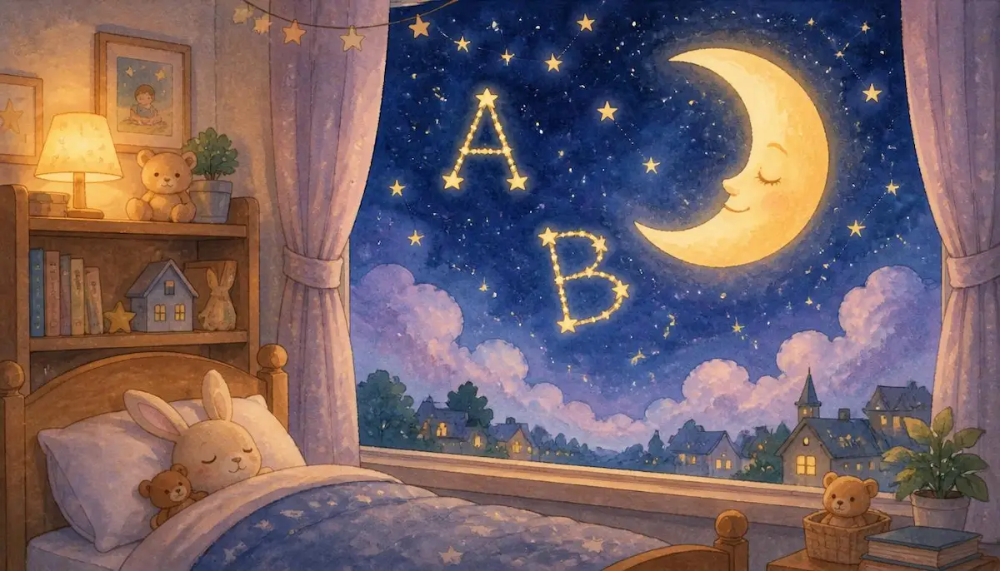
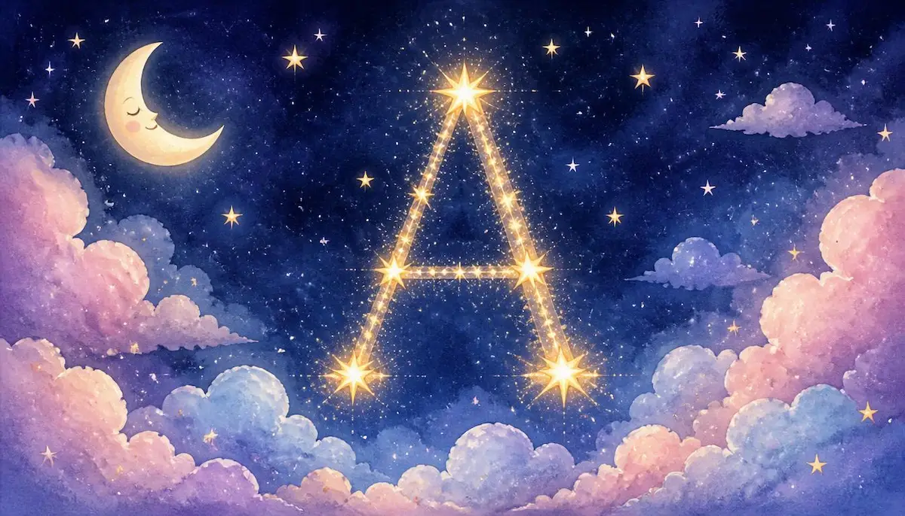
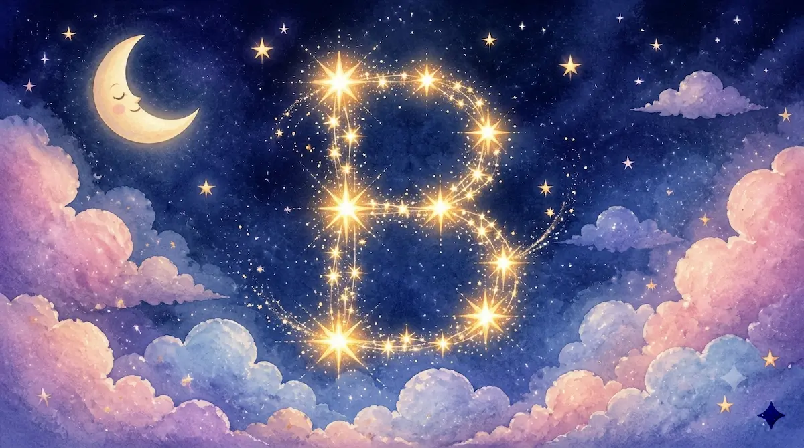
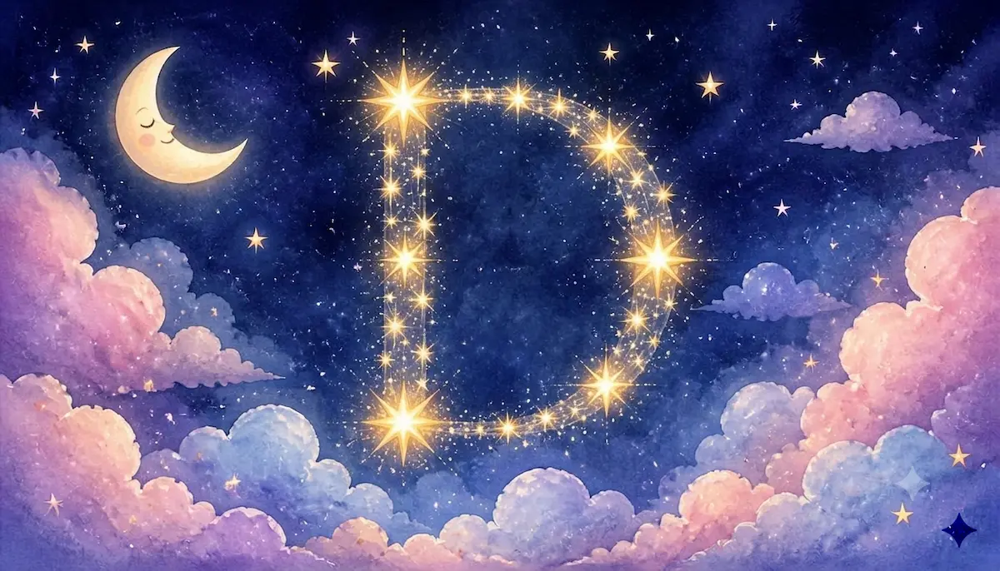
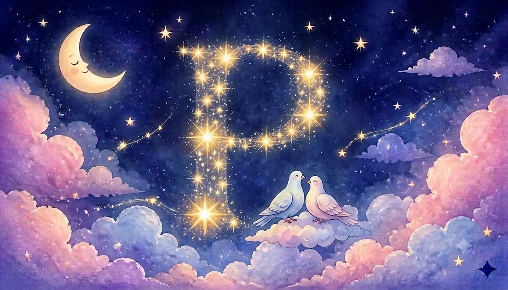
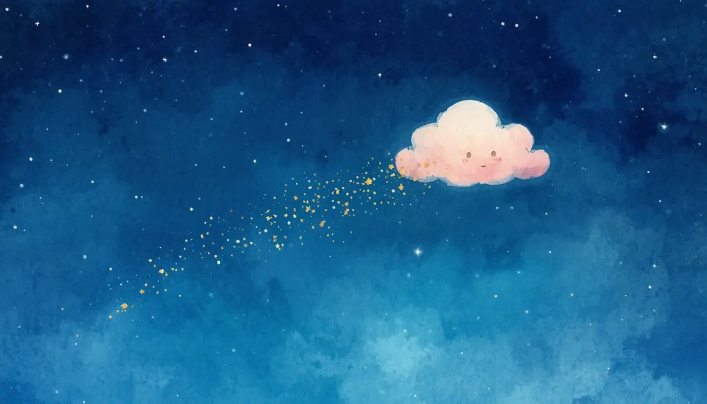
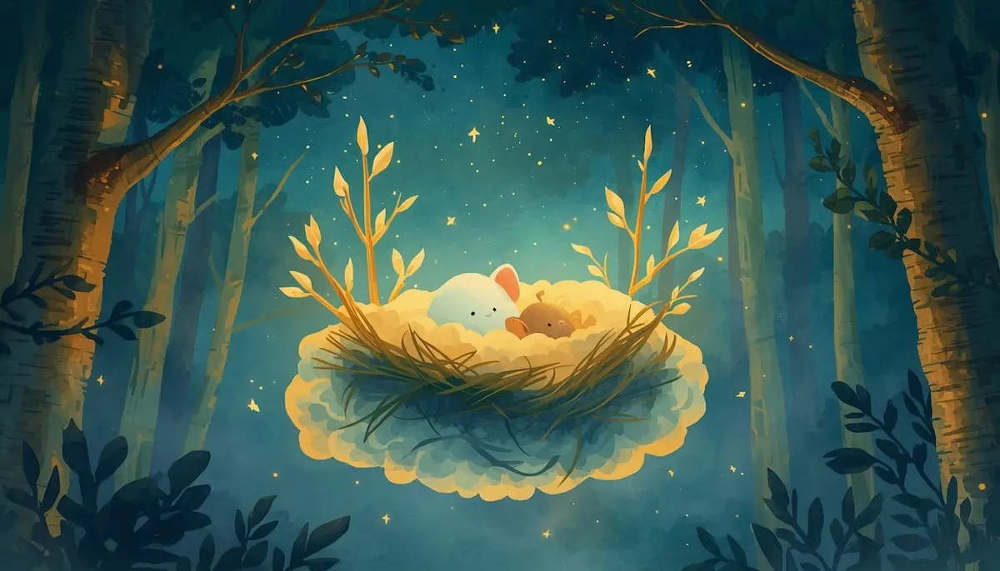
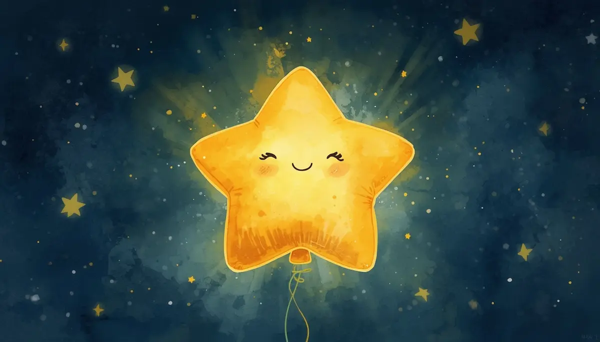

4. El Abecedario de las Estrellas
Hola, pequeño tesoro. Es momento de ir apagando las luces de fuera para encender tu luz de dentro. Busca tu lugar más cómodo, ese refugio cálido donde te sientes totalmente seguro. Imagina que tu cama es un nido de estrellas suaves y que tu cuerpo se vuelve blandito, como un muñeco de trapo que suelta toda su energía.

Respira despacio. No hay prisa. Estamos entrando en el taller donde se fabrica tu mañana. Antes de comenzar nuestro abecedario mágico, vamos a regalarle un momento de silencio a tu corazón.
Palabras de luz
Ahora, imagina que en el cielo nocturno aparecen letras doradas, una a una. Cada letra trae una palabra que te abraza.

A de Amor. El amor es como un calorcito que llena tu pecho y te dice que eres especial tal y como eres. Siente ese afecto que te da paz.

B de Bondad. Ser bondadoso es ser un buen amigo de ti mismo y de los demás. Es tratar a tu corazón con mucha delicadeza.
C de Calma. La calma es como un lago tranquilo bajo la luz de la luna. Todo está en paz en tu interior.

D de Descanso. Dormir es el regalo que le das a tu cuerpo para que crezca fuerte y sano. Es soltar el día y confiar en la noche.
G de Gratitud. Piensa en una cosa pequeña que te haya hecho sonreír hoy. Ese brillo se queda guardado en tu memoria para que sueñes cosas hermosas.

P de Paz. La paz es el silencio dulce que nos permite escuchar nuestro propio corazón.

Deja que estas palabras floten a tu alrededor como pequeñas estrellas. No tienes que aprenderlas ahora, solo sentirlas. Tu mente se siente clara y espaciosa, como un cielo sin nubes. Si aparece algún pensamiento, míralo como una nube que pasa de largo, dejando el cielo azul y brillante otra vez.

Estás a salvo. Estás protegido. El brillo de estas estrellas te acompañará durante todo tu sueño.
La respiración del globo estelar
Para terminar, vamos a hacer nuestra respiración mágica para cerrar el video en calma absoluta. Pon tus manos suavemente sobre tu barriga.

1. Inspira aire por la nariz muy despacio. Siente cómo tu barriga se infla como un globo dorado lleno de luz de estrellas... 1, 2, 3. Mantén el aire un segundito, sintiendo ese calorcito. Suelta el aire por la boca muy, muy lento, como si soplaras una vela sin querer apagarla. Mira cómo tu barriga baja y tu cuerpo se hunde, relajado, en la almohada. Hazlo una última vez... inspira luz... y exhala paz. Buenas noches, pequeña estrella. Mañana despertarás con un brillo nuevo.